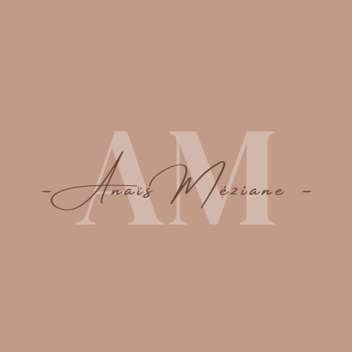

Je me présente, Anaïs Méziane, étudiante en Cycle Ingénieur Informatique à l'Ecole d'Ingénieurs CESI. Actuellement, je suis à la recherche d'une alternance de trois ans afin de poursuivre mes études dans le domaine du développement informatique.
J'ai créé ce site web dans le but de me faire connaître davantage et de pouvoir détailler mes compétences et projets de manière plus approfondie que sur un simple CV.
